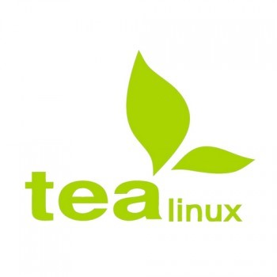
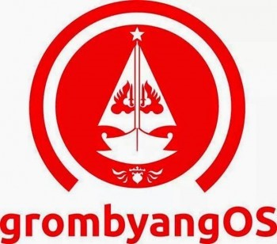

3 Distro LINUX Racikan Lokal
1. TeaLinuxOS

Tea LINUX OS adalah distro racikan dalam negeri yang di kembangkan oleh DOSCOM (Dinus Open Source Comunnity) yang berasal dari kota Semarang, Jawa Tengah. TeaLINUXOS adalah distro turunan Xubuntu, distro yang sekarang sudah mencapai catatan rilis 7.0 dengan nama kode “7.0 Rossela Tea” ini cenderung berorientasi ke pemerograman yang di khususkan untuk dunia Pendidikan, distro yang di kembangkan oleh komunitas di kampus Universitas Dian Nuswantoro ini biasa update dalam rentan waktu 1 tahun, distro yang memiliki aplikasi TeaLinuxOS IDE Installer (Aplikasi untuk menginstal tools pemerograman) ini sangat mempermudah para pengguna untuk menginstal tools yang diinginkan, keunggulan lainya yang dimiliki distro karya anak bangsa yang satu ini adalah memiliki single offline installer yang memiliki ekstensi sendiri, layaknya Windows yang identik dengan “.exe” untuk paket installernya, OSX dengan “.dmg”, Debian dan turunanya dengan “.deb” maka distro yang satu ini memiliki “.tea” yang dapat di install melalui Tea Package Manager. Tea Package Manager terbagi menjadi 2 aplikasi. Satu Tea Package maker, dan satu Tea Package installer, Tea Package maker ditujukan untuk memaketkan aplikasi agar mudah didistribusikan atau backup, Tea Package installer ditujukan untuk menginstall paket aplikasi “.tea” yang telah dibuat.
2. GrombyangOS

GrombyangOS adalah distro yang berasal dari kabupaten Pemalang Jawa Tengah, distro yang akhir-akhir ini namanya sedang naik daun ini adalah distro turunan Ubuntu yang di bangun berdasarkan Xubuntu, distro ini yang memiliki tampilan menarik ini lebih di khususkan untuk pemula dan dunia pendidikan, tampilan desktopnya sendiri di kembangkan dari Xfce Desktop Enviromment, dan beberapa aplikasi pendidikan yang sudah ada dalam bundle seperti LibreOffice, Kalzium, BKchem, KAlgebra, KBruch, KGeography, Othman Quran Browser. Distro yang satu ini sudah memiliki repositori sendiri yang bernama “Katak Repository” distro ini sudah mencapai catatan rilis 2.0.
BlankOn
BlankOn LINUX ya mungkin sebagian besar dari kita sudah tidak asing dengan nama ini, wajar saja karena dari 3 distro yang kita tuliskan disini BlankOn lah yang lebih awal hadir mewarnai perkembangan IT dalam negeri, bahkan sudah tidak dapat di pungkiri jika distro ini sudah mulai medunia jika pembaca searching video tentang BlankOn di youtube maka mungkin anda akan menemukan beberapa video yang berasal dari mancanegara.
BlankOn LINUX adalah sebuah distro yang di kembangkan oleh Yayasan Penggerak Linux Indonesia (YPLI) distro ini sudah mencapai 9 kali angka rilis yang terakhir memiliki codename “9.0 Suroboyo” distro yang identik dengan penggunaan nama kota di setiap codename rilisnya ini memiliki varian khusus yaitu, BlankOn Sajadah (Blankon Versi Islami) dimana pada varian ini dapat kita jumpai aplikasi bernuansa Islami seperti pengingat waktu sholat, arah kiblat, Al Qur’an dan terjemah, tartil Qur’an, pembaca hadist dan Kalender Hijriyah dan Kalkulator Zakat, pada tahun ini BlankOn memiliki peringkat ke 183 di distrowacth.com
Lalu mana yang paling bagus? Paling stabil? Dan paling enak di lihat? Semuanya bagus semuanya stabil dan semuanya memiliki tampilan desktop yang enak di lihat, yang paling tidak bagus, tidak stabil, tidak enak dilihat itu jika anda masih menggunakan produk bajakan karya perusahaan luar!
Mari kita dukung perkembangan IT dalam negeri dengan menggunakan produk karya anak bangsa.